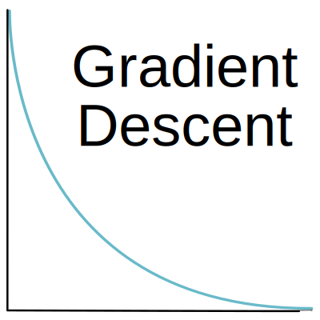
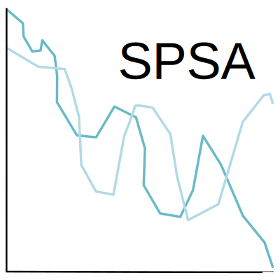

SOLT#
Release 1.0.0
Date Aug 14, 2024
SOLT (Stochastic Optimization Learning Tool) is a learning tool about gradient descent and stochastic optimization, and in particular the simultaneous perturbation stochastic approximation (SPSA) algorithm. This website contains information about gradient descent, SPSA and N-dimensional SPSA.
You can experiment with the various algorithms through Jupyter Notebooks that contain implementations of the algorithms. You can directly open the notebooks in a browser with Binder by clicking on the following button:
License
The GNU Affero General Public License v3 (AGPL-3.0) license is used. For more information, please see the GitHub repository.
Contributing
Please see the README file on the GitHub repository for information on how to contribute.

